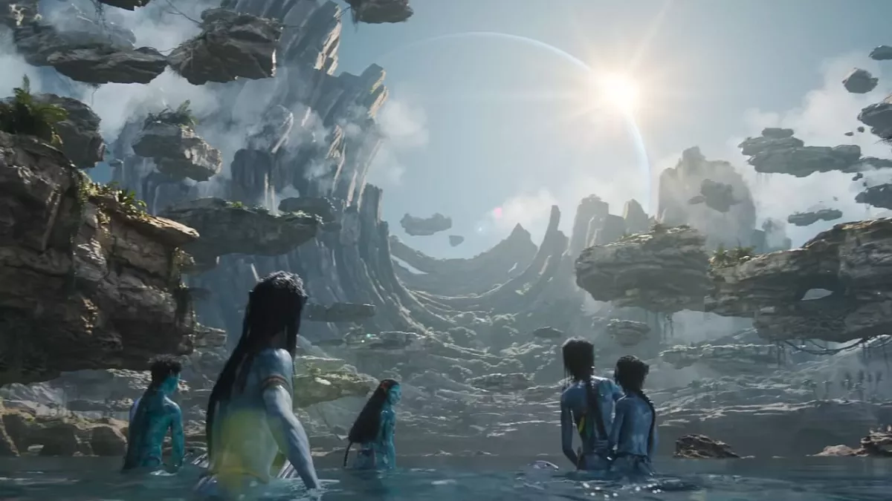
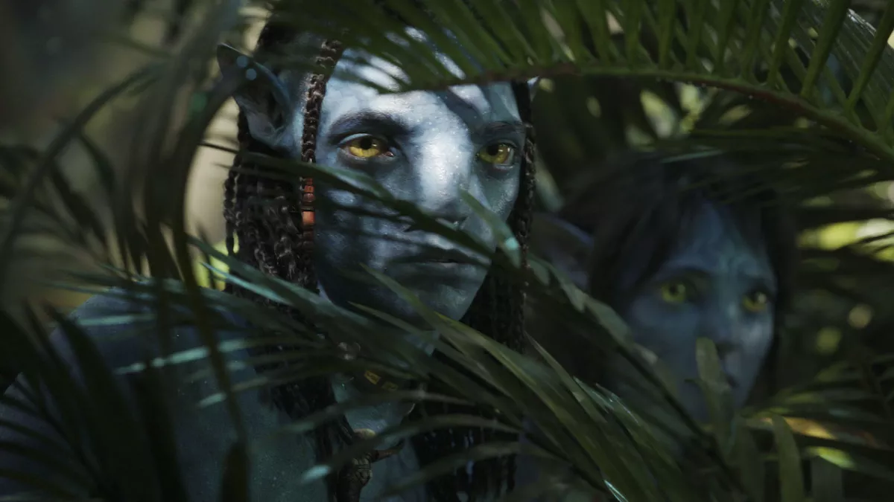
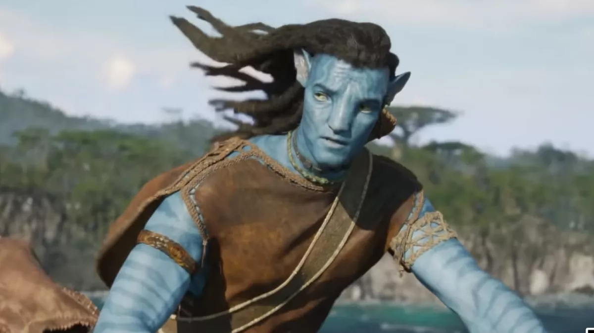

Avatar: The Way Of Water Is Due In December 2022
We have seen countless major movie franchises come and go, but few have had the global appeal of James Cameron's Avatar, which continues to hold the record as the highest-grossing movie of all time, pulling in $2.845 billion worldwide. The year 2022 saw the reveal of Avatar 2’s official title – Avatar: The Way of Water – along with a visually stunning first trailer and special footage shown at CinemaCon, which boosted fan anticipation by lightyears.
Luckily, after patiently waiting for sequels to arrive ever since the original was first released in 2009, the wait will finally be over soon. In fact, the day when the next chapter in the Avatar franchise hits theaters is where we shall start in our breakdown of everything we know about the blockbuster so far.
Originally set for release back in 2015, Avatar: The Way of Water has suffered one delay after another in the years following. Situations that led to this extended wait would involve the surprise addition of the fifth installment in 2016, the Disney/Fox merger in 2017, and, of course, the Covid-19 Pandemic in 2020. Luckily, it was in September of that year when James Cameron confirmed that principal photography had wrapped on Avatar 2 and that the third installment was also almost finished. By then, the film had been set for its current theatrical release on December 16, 2022.
James Cameron Co-Wrote Avatar 2 With Josh Friedman
James Cameron was the lone credited screenwriter on the first Avatar movie, but for the four sequels he has brought in a full team of collaborators who have helped him break down all upcoming chapters of the franchise. Josh Friedman, who penned Steven Spielberg's War of the Worlds remake with David Koepp and developed Terminator: The Sarah Connor Chronicles for television, was the first one to sign on and is credited as the co-screenwriter for Avatar: The Way of Water.
Avatar 2’s Plot Involves Jake And Neytiri’s New Family And A Water-Based Na’vi Tribe
In 2016, while promoting Cirque du Soleil’s live Avatar prequel, Toruk, James Cameron teased that the sequels - which were still in their early development at the time - would be a family saga, following the continuing adventures of Jake Sully, Neytiri, and their children. That description was essentially echoed by producer Jon Landau in 2020, when he provided more specific details about the plot of Avatar: The Way of Water, long before the then-rumored title was confirmed.
